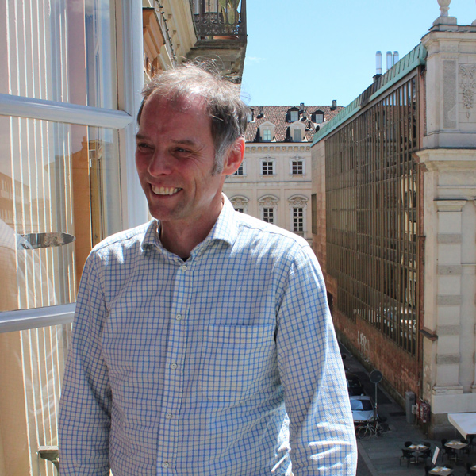
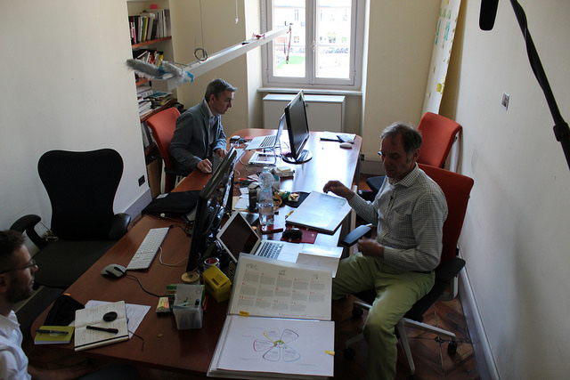
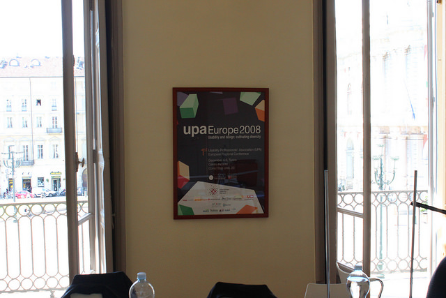
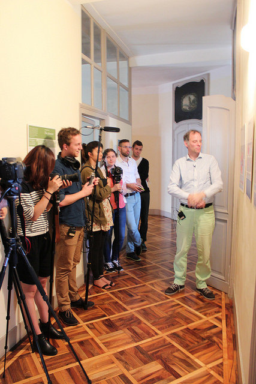
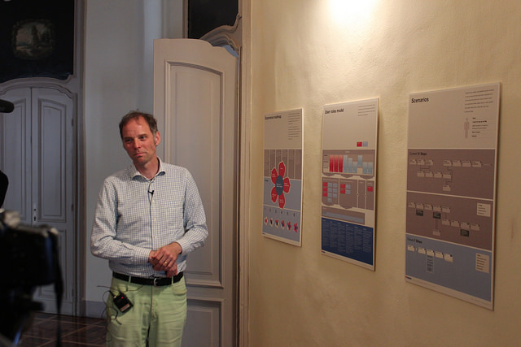
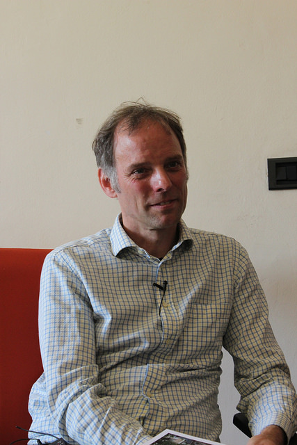

- Event Listeners
- 
Jan-Christoph Zoels
Jan-Cristoph Zoels is a founding partner and the head of user experience at Experientia where he oversees work quality and conducts user research. In his work, he aims to improve people’s experience of mobile services and applications, using information technology to support simple interactions. Prior to experientia, Jan-Cristoph has consulted service design concepts for clients Adidas, BMW, Nokia, Samsung and Vodafone, and taught at various renown design schools Rhode Island School of Design, the Interaction Design Institute Ivrea, Samsung’s Innovative Design Laboratory and the Domus Academy in Milan.
"Now it’s all about the refinement and of course the crafting of the experiences, to moving from what is the right thing, to how to design the thing right."
- 
- 
- 
- 

- 
"I think the key part for us as designers, is to learn how to do ethnography well, how to do it unbiased and how to go beyond the first little insight."
This interview was conducted by Scott Horsfall and Terrence Ma
Experientia
Healthcare
low2no
Personas
0:00
/
0:00